笔试真题
OPPO 24届秋招正式批笔试
考点分析

CSS权重
题号：0001
来源：OPPO
知识点：css权重分析
时间: 2024-07-25
执行以下程序，对于①②式能否在a标签上实现效果，下列说法正确的是（）
1 | div { |
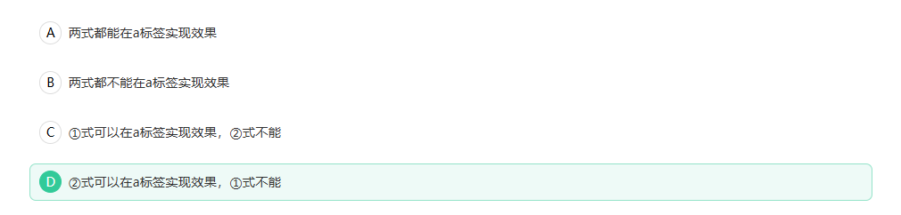
正确答案:D
官方题解:
text-decoration和font-size都是定义在a的父级元素上，通过让a元素继承这两个属性来实现效果。事实上，这两个属性都是可继承的，但不同的是，a标签自身还有默认属性text-decoration和color，该默认样式的权重比继承的高（继承的权重为0），因此①式并没有在a标签上起效果，而a标签的默认样式属性中没有font-size，因此②式可以起效果。
在CSS中，元素的样式可以被多个规则所影响。当这些规则发生冲突时，浏览器需要决定哪个规则应该优先应用。这就涉及到CSS中的“权重”（或称为“特异性”）概念。
CSS权重的基本原则
CSS权重是根据选择器的不同类型来计算的，权重值越高，则该选择器的优先级越高。权重由高到低分为四个等级：
-
内联样式 (
style属性)：权重为 1000。- 例如：
<p style="color: red;">This text is red.</p>
- 例如：
-
标识符选择器 (
#id)：每个标识符选择器权重为 100。- 例如：
#myID { color: blue; }
- 例如：
-
类选择器 (
.class)、属性选择器 ([attribute]) 和伪类 (:hover,:first-child等)：每个类选择器、属性选择器或伪类的权重为 10。-
例如：
1
.myClass { color: green; }
- 或者：
a:hover { color: yellow; }
- 或者：
-
-
类型选择器 (
element) 和伪元素 (::before,::after等)：每个类型选择器或伪元素的权重为 1。-
例如：
1
p { color: orange; }
- 或者：
p::first-letter { color: purple; }
- 或者：
-
-
通用选择器 (
*,div,p等)、子代选择器 (>), 相邻同胞选择器 (+), 一般同胞选择器 (~) 和伪关键字:not()的权重为 0。-
例如：
1
* { color: black; }
- 或者：
div > p { color: gray; }
- 或者：
-
-
继承 和 用户代理样式表 的权重为 0，但它们具有默认优先级。
- 浏览器默认的样式。
-
!important标志：在样式声明后加上!important可以提高权重，其权重高于所有其他权重，但低于内联样式中的!important。- 例如：
p { color: blue !important; }
- 例如：
计算权重的步骤
- 对于一个给定的选择器，计算每个级别的权重总和。
- 如果两个选择器的权重相同，则离元素更近的选择器优先（更具体的上下文）。
- 如果权重仍然相同，最后声明的规则将优先（CSS的层叠规则）。
示例
假设我们有以下CSS规则：
p { color: blue; }（权重为 1）.redText { color: red; }（权重为 10）#special { color: green; }（权重为 100）
如果一个段落同时使用了类 .redText 和 ID #special，那么最终的颜色将是绿色，因为 ID 选择器的权重更高。
复杂选择器
当选择器包含多个部分时，将每个部分的权重相加。例如，#myID .myClass 的权重为 100 + 10 = 110。
总结
理解CSS权重可以帮助你更好地控制页面样式的优先级，避免不必要的覆盖和冲突。尽量避免过度使用高权重的选择器（如 !important），因为它可能会导致样式难以管理和维护。
CSS属性
题号：0002
来源：OPPO
知识点：行内元素和块级元素
时间: 2024-07-25
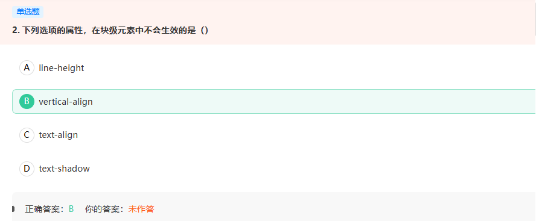
正确答案:B
官方解析:vertical-align在行内元素中设置有效，在块级元素中设置无效，即使块级元素嵌套了行内元素，行内元素也不会继承块级元素的该属性，故B选项符合要求；ACD选项均在块级元素中设置有效，作用在块级元素内的文本等内容。
BFC(Block Formatting Context)
题号:0003
来源:OPPO
知识点:BFC
时间：2024-07-28
执行一下程序，当给main盒子添加overflow:hidden；则变化情况为
1 | <style> |
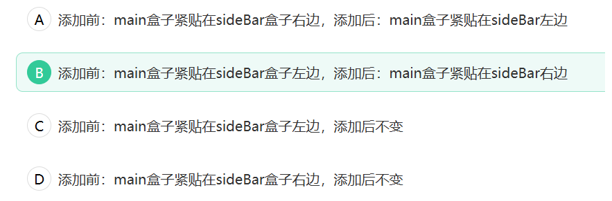
正确答案:B
官方解析:
添加前，由于sideBar盒子设置了浮动，因此main盒子会移动并占据sideBar盒子的位置，结果是main盒子紧贴在sideBar盒子的左边，添加后，overflow:hidden触发产生新的bfc。根据bfc的布局规则，bfc区域不会与浮动元素的区域发生重叠，因此，main盒子会紧贴在sideBar盒子的右边。
常规流,块盒
- 水平方向上,撑满整个包含块宽度,垂直方向上,依次摆放
- 垂直方向上相邻的元素,margin会合并(取两者中的最大值)
- 父子关系的情况下,可能会产生margin塌陷
- 父子关系的情况下,父元素无视浮动元素会产生高度坍塌
- 兄弟关系的情况下,正常元素可能会被浮动元素覆盖(正常元素在浮动元素之后)
BFC(Block Formatting Context)区块格式化上下文
- 开启BFC的区域,是一块独立的渲染区域
- 隔绝了内部与外部的联系 ,内部渲染不会影响到外部
- 不同的BFC区域,渲染时也互不干扰
开启BFC能解决什么问题
- 开启BFC，其子元素 不会再产生margin塌陷问题(不会和他的子元素产生margin合并)
- 开启BFC，就算子元素浮动，自身高度也不会坍塌 (计算高度时不再无视浮动元素)
- 开启BFC，自己不会被其他浮动元素所覆盖 (不会与浮动元素重叠，会避开浮动元素排布)
如何开启BFC
- 根元素(HTML)自身是一个BFC
- 设置float 属性
- 设置position 属性为设置absolute或fixed
- 设置overflow 属性值不为visible
- 行内块盒(inline-block )
- 设置display 为flow-root 的元素
- 伸缩项目(flex盒子内的item )
- 多列容器(设置column-count )
- 表格元素(table thead tbody tfoot tr th td caption)
- column-span为all的元素(表格第一行横跨所有列)
JS逻辑运算
题号:0004
来源:OPPO
知识点: JS的逻辑与和逻辑或
时间：2024-07-28
此代码的运行结果为
1 | console.log(0&&1,0||1,1&&3,1||3) |
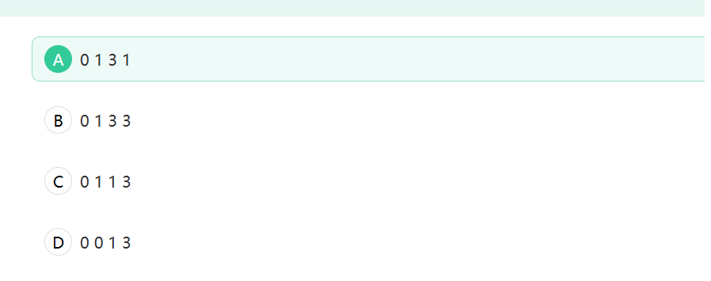
正确答案:A
官方解析:
再进行&&和||运算时，两边的语句会转化为布尔类型（Boolean），然后再进行运算，本题中，
&&和||两边均为数字，非0数字转化为true，0转化为false。
&&是两边都是true，结果才是true；||是任意有一个true结果就为true。
第一个表达式结果为false，返回0。
第二个表达式结果为true，返回1，D选项排除。
第三个表达式为true，因为&&需判断两个值都true，所以返回第二个为真的值3，C选项错误。
第四个表达式为true，因为||只判断一个值为true就是true，所以返回第一个为真的值1。
A选项是正确的。
对于JS的逻辑与(&&)和逻辑或(||),如果两边均为数字,则非0数字为true,0为false
$逻辑运算\begin{cases}&&\begin{cases}第一位为0->返回0\第一位为true\begin{cases}第二位为0->返回0\第二位为true->返回第二位的值\end{cases}\end{cases}\逻辑或\begin{cases}第一位为0->返回第二位\第一位为true->返回第一位\end{cases}\end{cases}$
循环结构访问数组
题号：0005
来源：OPPO
知识点：循环结构
时间: 2024-07-28
此代码的运行结果为()
1 | var arr = [1,2,5,7,8] |
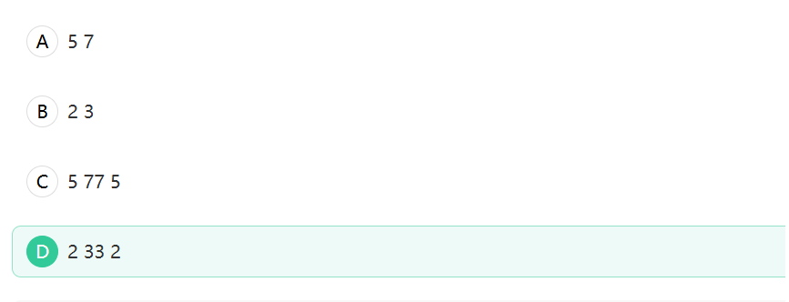
正确答案:D
官方解析:
此代码用双重for循环遍历数组，当两个元素的和为12时，将两个元素的下标输出。
从数组中可知，5+7的和为12。 因为是双重for循环，第一层循环到5第二层循环到7时，会执行if语句块，第一层循环到7第二层循环到5时，也会执行if语句，所以会输出两次，AB选项排除。
if 语句块中输出的变量i , j 分别可看做数组元素的下标，所以输出的值应为2 3；3 2，D选项正确。
JS的Promise
题号：0006
来源：OPPO
知识点：JS的Promise
时间: 2024-07-28
请问一下JS代码输出的结果是()
1 | const p1 = Promise.resolve(117) |
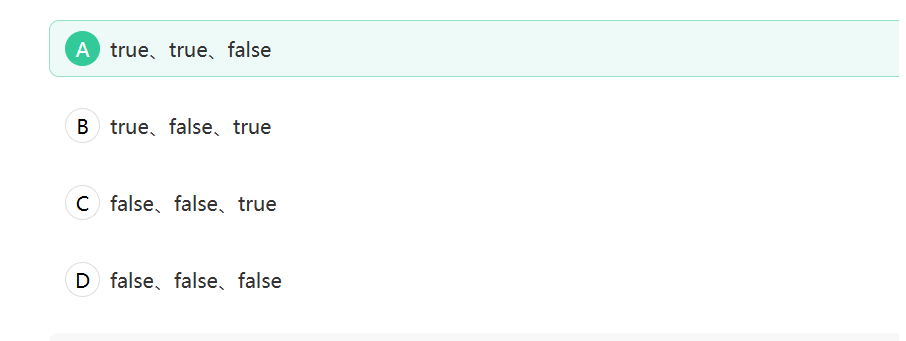
正确答案:A
官方解析:
Promise.resolve方法如果传入一个非Promise、非thenable的立即值，则得到的是以这个值填充的Promise，即使这个值一样，得到的也不是相同的Promise，所以p1不等于p3，选项BC错误。
Promise.resolve方法如果传入一个真正的Promise，那么返回的就是这个Promise本身，所以p1和p2是同一个Promise，选项D错误。
所以最终输出的结果是true、true、false，选项A正确。
什么是Promise
- Promise A+规范:
- 出现在ES6(2015年)之前
- 是一个民间规范
- 主要解决异步处理问题
- 该规范解释Promise对象为:带有then方法的对象
- 规定了一个带then方法的对象到底满足什么规则才能进行异步处理
- ES6的Promise
- 吸纳了Promise A+ 规范
- 可以使用构造函数方法
const p = new Promise()来得到一个符合Promise A+ 规范的对象 - 引入了一些新的方法
- catch
- finally
- all
- race
- allsettled
GPT整理内容
JavaScript 中的 Promise 是一种处理异步操作的方式，它提供了一种比传统的回调函数更优雅的方式来处理异步流程中的成功和失败情况。Promise 对象代表了一个最终可能会完成或失败的异步操作，并且一旦状态改变就不会再变回原来的状态。
Promise 的基本概念
一个 Promise 对象有三种状态：
- Pending（等待中）：初始状态，既不成功也不失败。
- Fulfilled（已成功）：表示异步操作成功完成。
- Rejected（已失败）：表示异步操作失败。
一旦 Promise 变成 Fulfilled 或 Rejected 状态，它的状态就不会再改变，这种特性被称为“不可变性”。
创建 Promise
创建 Promise 实例的基本语法如下：
1 | const promise = new Promise((resolve, reject) => { |
resolve 和 reject 是 Promise 构造函数接收的执行器函数的参数。执行器函数会在 Promise 创建后立即执行。
使用 Promise
.then() 方法
.then() 方法用来注册成功回调函数。如果 Promise 成功，.then() 中的回调函数会被调用。
1 | promise.then(result => { |
.catch() 方法
.catch() 方法用来注册失败回调函数。如果 Promise 失败，.catch() 中的回调函数会被调用。
1 | promise.catch(error => { |
.finally() 方法
.finally() 方法无论 Promise 最终是成功还是失败都会执行。
1 | promise |
Promise 的链式调用
Promise 支持链式调用，这意味着你可以连续地使用 .then()、.catch() 和 .finally() 方法来处理多个异步操作。
1 | fetch('https://api.example.com/data') |
Promise 的静态方法
除了实例方法之外，Promise 类还提供了一些静态方法，用于处理多个 Promise：
.all()：等待所有 Promise 完成，并返回一个包含所有结果的数组。.race()：返回一个 Promise，该 Promise 会解析或拒绝第一个完成的 Promise。.allSettled()：等待所有 Promise 完成，并返回一个对象数组，每个对象表示每个 Promise 的最终状态。.any()：返回一个 Promise，该 Promise 会在任何一个 Promise 成功时解析，或者在所有 Promise 都失败时拒绝。
这些静态方法可以非常方便地处理多个异步操作。
示例
下面是一个简单的示例，演示如何使用 Promise：
1 | const fetchData = () => { |
以上就是一个关于 JavaScript 中 Promise 的简要介绍。Promise 提供了一种强大而灵活的方式来管理异步代码，使得程序更加易于理解和维护。
JS代理
题号：0007
来源：OPPO
知识点：JS的代理
时间: 2024-07-28
请问一下JS 代码最终输出结果是（）
1 | const obj = { |
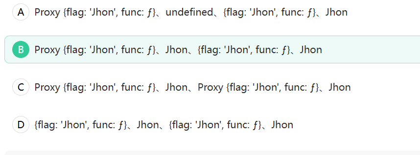
正确答案:B
官方解析:
Proxy可以代理针对目标对象的访问，但它不是目标对象的透明代理，且在Proxy代理的情况下，目标对象内部的this关键字会指向Proxy代理，则p.func函数返回的this指向是Proxy，选项D错误。
Proxy代理了对象obj，尽管this指向改变了，但是flag属性是保存在对象obj下，依然可以访问到目标对象obj下的flag属性，输出Jhon。当然，有些原生对象如Date的内部属性则可能因为this指向改变而无法取到值，选项A错误。
Proxy代理后作用于变量p，原对象obj并没有受到影响，因此obj.func函数可以正常的输出this指向即自身、属性flag的值Jhon，选项C错误。
所以代码最终的结果是Proxy {flag: ‘Jhon’, func: ƒ}、Jhon、{flag: ‘Jhon’, func: ƒ}、Jhon，选项B正确。
计算机网络香农公式
题号：0008
来源：OPPO
知识点：计算机网络中的香农公式
时间: 2024-07-28
现已知信噪比为30dB,信道带宽为8kHz,则该信道的信道容量大约为()
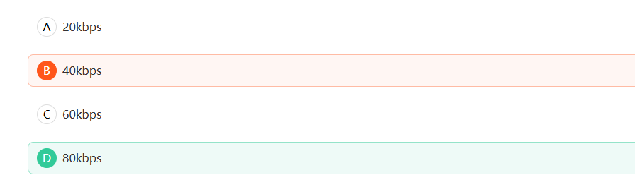
正确答案:D
官方解析:
根据香农公式：
，W为信道带宽，单位为Hz，S是信号功率（瓦），N是噪声功率（瓦）。
信噪比
，代入公式得
，
操作系统文件存储
题号：0009
来源：OPPO
知识点：操作系统中的文件
时间: 2024-07-28
如果一个磁盘块的大小是100字符,一文件中的第0到第99字符位于第5个磁盘块上,那么第280到300的字符位于第几号磁盘块上()
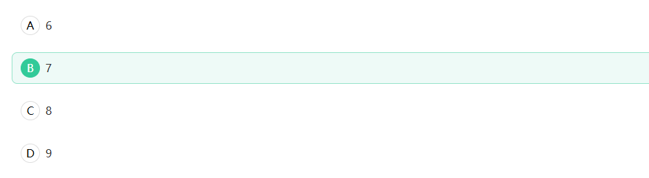
正确答案:B
官方解析:
考查操作系统中的文件。
一个磁盘块的大小是100字符，一文件中的第0到99的字符位于第5个磁盘块上，那么第280到300的字符位于
号磁盘块上
JS严格模式，数组的arguments
题号：0010
来源：OPPO
知识点：arguments对象,严格模式
时间: 2024-07-28
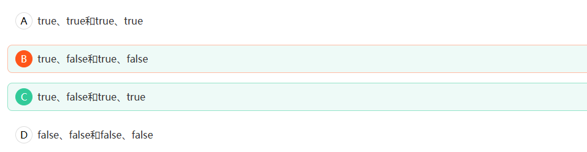
正确答案:C
官方解析:
在严格模式下，不论参数如何变化，arguments 对象都不会随之改变，因此严格模式下输出应为 true、false，选项 AD 错误。
在非严格模式下，命名参数的变化会同步更新到 arguments 对象中，也就是说变量 a 的值与 arguments[0] 始终保持一致，输出应为 true、true，选项 B 错误。
所以代码最终输出的结果分别为 true、false 和 true、true，选项 C 正确。
arguments对象
arguments对象:arguments是一个类数组对象，它包含了函数调用时传入的所有参数。在函数内部，可以通过arguments[0]来访问第一个参数。- 变量赋值: 当你在一个函数内部声明一个变量并对其进行赋值时，这个变量的值只会影响这个局部变量本身。在非严格模式下，如果你在函数内部对一个未声明的变量进行赋值，它会被视为全局变量。在严格模式下，这样做会导致一个引用错误。
计算机网络UDP传输
题号：0011
来源：OPPO
知识点：计算机网络中的UDP传输
时间: 2024-07-28
UDP属于尽力而为的不可靠传输,使用UDP传输的数据,其可靠性需要在那一层保证?
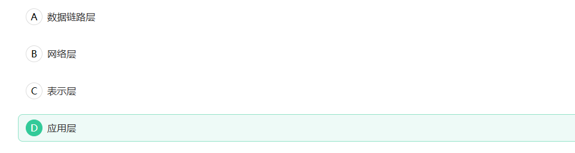
答案:D
官方解析:
UDP是一个无连接的、不可靠的传输层协议，如果用户采用UDP传输数据，必须在传输层的上层提供可靠性保证的工作，表示层只负责转化数据的表现形式，因此只能是应用层保证可靠性，选D。
计算机网络GBN协议
题号：0012
来源：OPPO
知识点：可靠性传输的保证方法:停止等待,回退N帧,选择重传
时间: 2024-07-28
主机A与主机B建立了一条TCP协议，采用的是GBN重传方式。假如发送窗口是3，在时刻t，接收方期待的下一个有序分组的序号是 k，请问这个时刻发送方窗口内的报文序号可能是多少？(假设接受主机不会对报文重新排序)
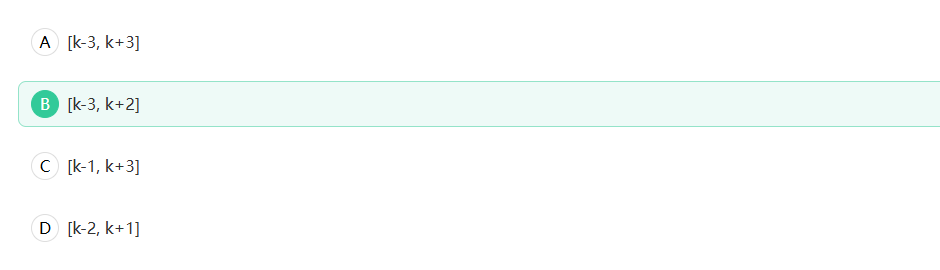
正确答案:B
官方解析:
首先我们需要抓住关键–GBN协议，然后反应出GBN协议几个特点：发送方拥有一个窗口，长度为N=3；接收方无窗口，只接收希望接受序号的报文，对于失序到达的报文段采取的方式是直接丢弃；在重传的时候，将会重传当前发送方窗口中所有未被确认的报文段。在t时刻，接收方起到收到的下一个分组序号为k，说明接收方已经正确接受了k之前的所有分组，对于发送方而言，我们考虑两种最极端的情况：
第一种情况：假设之前所有的报文都正确传输，没有任何丢失的问题，那么在这种情况下，发送方正确接收了接收方对于小于k的所有报文的ACK确认，因此窗口将会不断向后移动，序号为k、k+1、k+2；第二种情况：由已知条件我们可以得知序号为k-1的报文是发送方发送的最后一个报文，假设该报文虽然到达了接收方，但是接收方返回的ACK确认由于一些原因没有到达发送方，则窗口不会移动，在这种情况下我们再假设序号k-1位于窗口的最后一列，即如下图所示的所有序号报文都没有在发送方被确认，则得到了我们最坏的一种情况，k-3、k-2、k-1；
综合上述两种情况，[k-3, k+2]区间内的都可能出现，因此选B。
Linux命令home
题号：0013
来源：OPPO
知识点：Linux命令
时间: 2024-07-28
Linux 中，假设当前用户 zhangsan 所在目录为 /home，则想要切换到 zhangsan 的家目录 /home/zhangsan 下，则下面命令不能实现的是（）
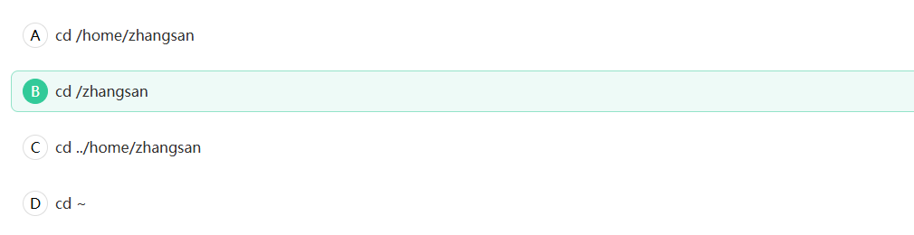
正确答案:B
B选项中,cd /zhangsan 会去根目录下查早zhangsan故无法切换
Linux命令basename
题号：0014
来源：OPPO
知识点：Linux命令
时间: 2024-07-28
Linux中,执行以下命令的结果是()
1 | basename /etc/sysconfig/network |
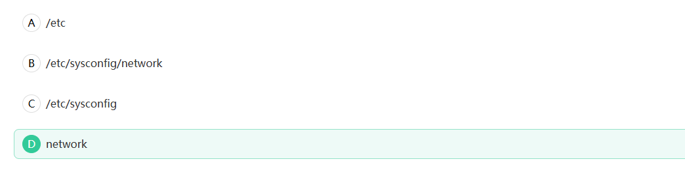
在 Linux 中，basename 命令用于从给定的路径中移除目录名，只返回文件名部分。当你运行 basename /etc/sysconfig/network 时，该命令将返回路径中的最后一部分，即文件名。
数据结构与算法：前中后缀表达式
题号：0015
来源：OPPO
知识点：前中后缀表达式的转化
时间: 2024-07-28
中缀表达式a*b+c/d-e的前缀表达式是:()
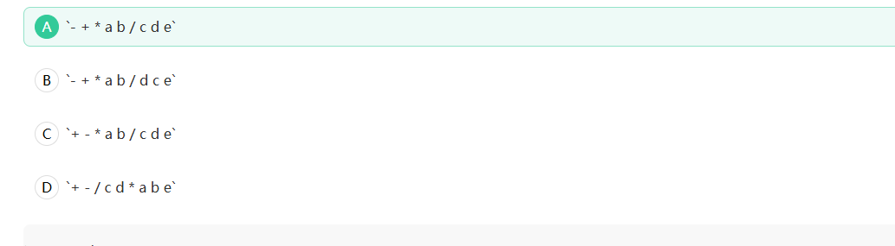
中缀表达式变为前缀表达式,将每一个运算都加上括号,然后将运算符移到自己的括号前面即可.
操作系统进程调度算法
题号：0016
来源：OPPO
知识点：操作系统进程调度算法
时间: 2024-07-29
下面哪种进程调度算法可能导致优先级进程饥饿：（）
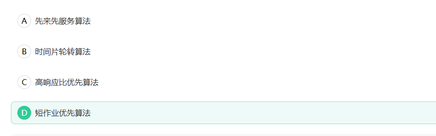
编程题：进度环
题号：0017
来源：OPPO
知识点：svg图像
时间: 2024-07-29
实现一个进度环，当页面输入框中输入对应百分比，进度环动画展示当前百分比。效果如下图：
- 在输入框中输入0-100的数据，点击更新进度按钮，圆环动画展示当前所占比例。
- 当在输入框中输入数据超出0-100范围，不再继续往下运行函数，返回null
1 |
|
数据结构与算法:哈夫曼树
题号：0018
来源：OPPO
知识点：哈夫曼树
时间: 2024-07-29
若以{3, 6, 9, 12, 15, 18, 21, 24, 27}作为叶子结点的权值构造一棵哈夫曼树，则其带权路径长度是（ ）
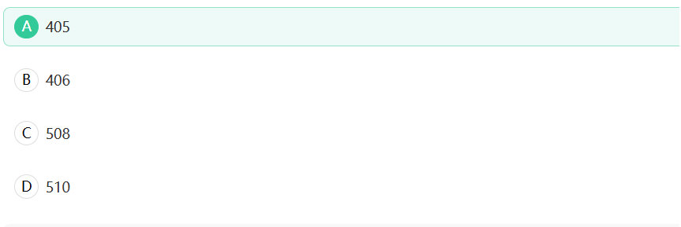
画出哈夫曼树如下图:

由图像可知,该哈夫曼树的带权路径长度为
$27*2+(21+24+18+12+15)3+94+(3+6)*5\=54+270+36+45\=405$
数据结构与算法:二分查找
题号：0019
来源：OPPO
知识点：二分查找
时间: 2024-08-15
已知一个有序表（2, 4, 6, 8, 10, 12, 14, 16, 18, 20, 22, 24, 26），当二分查找值为15的元素时，若采取向上取整的方式取中间值，查找成功的比较次数为（ ）
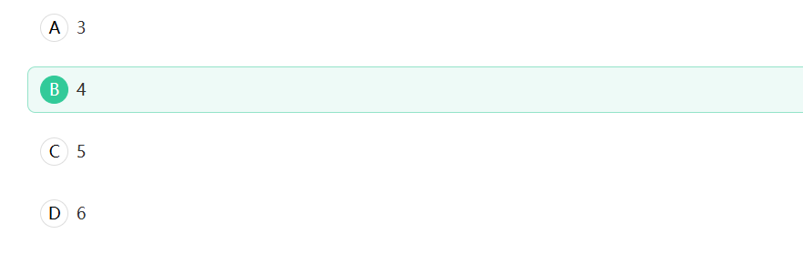
总共13个元素
- 第一次比较:
mid = (1+13)/2=7,第7位是14,14<15 - 第二次比较
mid = (7+13)/2=10,第10位是20,20>15 - 第三次比较
mid = (7+10)/2=8.5,向上取整为9,第9位是18,18>15 - 第四次比较
mid = (7+9)/2=8,第8位是16>15
此时若15存在,则应该在第7位和第8位之间,而实际上,他俩之间没有元素,故判断15不在数组中.
CSS的Flex布局
题号：0020
来源：OPPO
知识点：Flex布局
时间: 2024-08-15
要实现一个左侧宽度固定,右侧元素自适应,应该在下面代码中补充哪个选项()
1 | <div class="container"> |
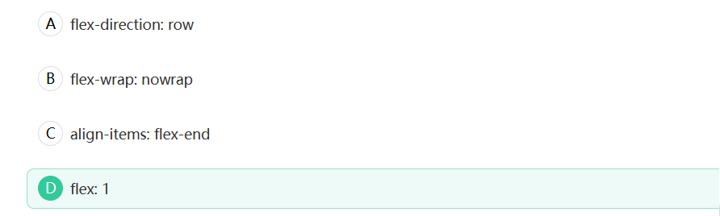
题号：0021
来源：OPPO
知识点：散列存储
时间: 2024-07-28
数据结构与算法:散列(哈希)存储
已知一组关键字为 {21, 32, 43, 57, 61, 74, 85}，采用链地址法处理冲突，散列表是一个下标从0开始的长度为12的一维数组，散列函数为 H(key) = key MOD 12，则装填因子 α 是（）。
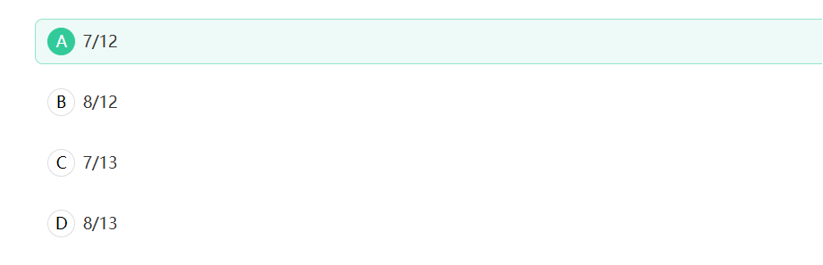
因为采用链地址法处理冲突,所以每一个关键字都会存储在散列表中,装填因子$\alpha = \frac{关键字数量}{散列表长度}=\frac{7}{12}$,存储情况如下图.

数据结构与算法:数组奇数
题号：0022
来源：OPPO
知识点:数组的奇数
时间: 2024-07-28
小欧有一个长度为 nn 的数组，现在他想挑出 3 个数，使得这 3 个数的和为奇数，如果可以挑出则输出 “YES”，否则输出 “NO”
1 | const rl = require("readline").createInterface({ input: process.stdin }); |
数据结构与算法：子数组和
题号：0023
来源：OPPO
知识点：子数组和的最大公约数
时间: 2024-07-28
小欧有一个长度为 nn 的数组，他需要把这个数组分割成 k(k>1)k(k>1) 个非空子数组，也就是 [l1,r1],[l2,r2],⋯ ,[lk,rk][l1,r1],[l2,r2],⋯,[l**k,r**k]，其中 1≤l1<r1≤l2<r2≤⋯≤lk<rk≤n1≤l1<r1≤l2<r2≤⋯≤l**k<r**k≤n，并且 ri+1=li+1r**i+1=l**i+1。
对于每个子数组，小欧都会计算出这个子数组的总和 bi=ali+⋯+arib**i=ali+⋯+ari。
现在小欧想找一个分割方案（子数组数量 kk 必须大于 1），使得 gcd(b1,…,bk)gcd(b1,…,b**k) 最大，请你帮他找到最大值。
gcd：指最大公约数，Greatest Common Divisor的缩写。
暂时不会
58集团 23届秋招正式批
最短送餐路径
暂时不会
最长无重复子串
题号：0002
来源：58集团
知识点：队列的应用
时间: 2024-09-09
1 | /** |
反转数组元素
题号：0003
来源：58集团
知识点：反转数组，双指针，解构赋值
时间: 2024-09-09
不要使用数组的reverse 方法，反转一下数组的元素。
1 | /** |
Cookie和Storage
题号：0004
来源：58集团
知识点：Cookie和Storage
时间: 2024-09-09

题号：0018
来源：58集团
知识点：Cookie和Storage
时间: 2024-09-09

移动端融合技术
题号：0005
来源：58集团
知识点：PWA,severless,hybird app, ts,flutter
时间: 2024-09-09

箭头函数
题号：0006
来源：58集团
知识点：箭头函数不能做构造函数
时间: 2024-09-09
下段代码打印结果为：
1 | const Person = (name="wang",age=10) => { |

题号：0020
来源：58集团
知识点：箭头函数,const变量声明,this指针上下文
时间: 2024-09-09
以下输出结果
1 | const a = 10; |

题号：0023
来源：58集团
知识点：箭头函数,const变量声明,this指针上下文
时间: 2024-09-09
箭头函数是普通函数的简写，可以更优雅的定义一个函数，和普通函数相比，以下差异说明错误的是：

- 箭头函数没有独立的this,arguments ,并且不可被用作方法green
- 箭头函数不能用作构造函数 .使用new 调用它们会引发TypeError .它们也无法访问new.target 关键字.
- 箭头函数不能在其主体中使用yield ,也不能作为生成器函数创建.
- 参数部分支持剩余参数,默认参数,解构赋值 ,并且始终需要使用括号
1 | (a,b,...r) => expression |
- 箭头函数可以是async 的,方法就是在表达式前加上
async关键字
1 | async param => expression |
- 当函数只有一个简单参数时,参数的括号可以省略.
- 当函数直接返回表达式时,函数体大括号和
return关键字可以省略. - 箭头函数总是未命名的.如果箭头函数需要调用自身,需要使用具名函数表达式.也可以将箭头函数赋值给一个变量,这样它就有了名字.
1 | const bob2 = a => a + 100 |
注意
当使用表达式体语法
(params)=>{object: literal}返回对象字面量时,不能按预期工作
1 | const func = ()=>{foo: 1} |
这是因为只有当箭头后面的标记不是左括号时,JS才会将箭头函数视为表达式体,因此括号({})内的代码会被解析为一系列语句,其中foo是标签 ,而不是对象文字中的键.
要解决这个问题,可以用括号将对象字面量包装起来.
1 | const func = ()=>({foo: 1}) |
- 不能用作方法
箭头函数表达式只能用于非方法函数,因为它们没有自己的this.让我们看看将它们用作方法时会发生什么
1 |
|
另一个示例涉及到Object.defineProperty()
1 |
|
由于类 体具有this上下文,因此作为类字段 的箭头函数会关闭类的this上下文,箭头函数体中的this将正确指向示例(对于静态字段来说就是类本身).但是,由于它是一个闭包 ,而不是函数本身的绑定,因此this的值不会根据执行上下文而改变.
1 | class C { |
箭头函数属性通常被称作"自动绑定方法",因为它与普通方法的等价性相同:
1 | // 这段代码暂时还不理解 |
备注
类字段是在实例(instance)上定义的,而不是在原型(prototype)上定义的,因此每次创建实例都会创建一个新的函数引用并分配一个新的闭包,这可能会导致比普通非绑定方法更多的内存使用.
出于类似的原因,call(),apply(),bind()方法在箭头函数上调用时不起作用,因为箭头函数根据箭头函数定义的作用域来建立this的,而this的值不会根据函数的调用方式而改变.
- 没有参数绑定
箭头函数没有自己的arguments对象.因此,在本例中,arguments是对外层作用域参数的引用.
1 | function foo(n) { |
注意
严格模式下不能声明名为
arguments的变量,因此上面的代码会出现语法错误.这使得arguments的范围效应更容易理解.
在大多数情况下,使用剩余参数 是比使用arguments对象更好的选择.
1 | function foo(n) { |
- 不能用作构造函数
箭头函数不能用作构造函数,当使用new调用时会出错.它们也没有prototype属性.
1 | const Foo = () =>{} |
- 不能用作生成器
箭头函数的主体中不能使用yield关键字(除非在箭头函数进一步嵌套的生成器函数中使用).
因此,箭头函数不能用作生成器.
- 箭头前换行
箭头函数的参数和箭头之间不能换行
1 | const func = (a,b,c) |
为便于格式化,可在箭头后换行,或在函数体周围使用括号/花括号,如下图所示.也可以在参数之间换行.
1 | const func = (a, b, c) => |
- 箭头的优先级
虽然箭头函数中的箭头不是运算符,但与普通函数相比,箭头函数具有特殊的解析规则,与运算符优先级的交互方式不同.
这是错误示范1 | let callback; |
由于=>的优先级低于大多数运算符,因此需要使用括号来避免callback || ()被解析为箭头函数的参数列表
1 | callback = callback || (()=>{}) |
HTTP报文头字段
以下与http缓存无关的头字段是:

常用HTTP标头
-
Content-Length
- 类型: Forbidden header name(禁止修改的标头)
- 语法 :
Content-Length: <length> - 指令:
<length>消息的长度,用十进制数字表示的字节的数目
-
ETag
EtagHTTP响应头是资源的特定版本的标识符.这可以让缓存更高效,并节省带宽,因为如果内容没有改变,Web服务器不需要发送完整的响应.而如果内容发生了变化,使用Etag有助于防止资源的同时更新相互覆盖(‘空中碰撞’)- 如果给定URL中的资源更改,则一定要生成新的
ETag值.比较这些Etag能快速确定此资源是否变化. - 类型: Forbidden header name
- 语法:
1
2ETag: W/"<etag_value>"
ETag: "<etag_value>"-
指令
W/（可选，大小写敏感)表示使用弱验证器 .弱验证器很容易生成，但不利于比较。强验证器是比较的理想选择，但很难有效地生成。相同资源的两个弱ETag值可能语义等同，但不是每个字节都相同。- `<etag_value>
实体标签唯一地表示所请求的资源。他们是位于双引号之间的ASCII字符串(如"675af34563dc-tr34").没有明确指定生成ETag值得方法。通常，使用内容得散列，最后修改时间戳得哈希值，或简单地使用版本号。
-
避免“空中碰撞”
在
ETag和If-Match头部的帮助下，可以检测到“空中碰撞”的编辑冲突。例如，当编辑MDN时，当前的wiki内容被散列，并在响应中放入
ETag1
ETag: "33a64df551425fcc55e4d42a148795d9f25f89d4"
将更改保存到Wiki页面(发布数据时),
POST请求将包含有ETag值得If-Match头来检查是否为最新版本。1
If-Match: "33a64df551425fcc55e4d42a148795d9f25f89d4"
如果哈希值不匹配,则意味着文档已经被编辑,抛出
412前提条件失败错误.- 缓存为更改的资源
ETag头得另一个典型用例是缓存未更改得资源.如果用户再次访问给定的URL(设有ETag字段),显示资源过期了且不可用,客户端就发送值为ETag的If-None-Mathheader字段.1
If-None-Match: "33a64df551425fcc55e4d42a148795d9f25f89d4"
服务器将客户端的
ETag(与If-None-Match一起发送)与其当前版本的资源的ETag进行比较,如果两个值匹配(即资源未更改),服务器将返回不带任何内容的304Not Modified状态,告诉客户端缓存版本可用(fresh). -
Expires
Expires响应标头包含响应应被视为过期的日期/时间- 无效的日期(比如0)代表过去的日期,即该资源已经过期.
注意
如果响应中有指令为
max-age或s-maxage的Cache-Control标头,则Expires标头会被忽略.- 语法
1
Expires: <http-date>
- 指令:
<http-date>,HTTP日期时间戳 - 示例:
1
Expires: Wed, 21 Oct 2015 07:28:00 GMT
-
Last-Modified
Last-Modified是一个响应首部,其中包含源头服务器认定的资源作出修改的日期及时间.它通常被用作一个验证器来判断接收到的或者存储的资源是否彼此一致.由于精确度比ETag低,所以这是一个备用机制.包含有If-Modified-Since或If-Unmodified-Since首部的条件请求会使用这个字段.- 语法
1
Last-Modified: <day-name>, <day> <month> <year> <hour>:<minute>:<second> GMT
- 指令
<day-name>:“Mon”,“Tue”,“Wed”,“Thu”,“Fri”,"Sat"或"Sun"之一(区分大小写)<day>:两位数字表示的天数,例如"04"or"23"<month>“Jan”,“Feb”,“Mar”,“Apr”,“May”,“Jun”,“Jul”,“Aug”,“Sep”,“Oct”,“Nov”,"Dec"之一(区分大小写)<year>:4位数字表示的年份,例如"1990"或者"2016"<hour>:2位数字表示的小时数,例如"09"或者"23"<minute>:两位数字表示的分钟数,例如"04"或者"59"GMT:国际标准时间.HTTP中的时间均用国际标准时间表示,从来不适用当地时间.
- 示例
1
Last-Modified: Wed, 21 Oct 2015 07:28:00 GMT
回流(重排)与重绘
题号：0009
来源：58集团
知识点：CSS重绘和回流
时间: 2024-09-09
以下哪一项不能最小化重绘(repaint)和回流(reflow)：

CSS注释
题号：0011
来源：58集团
知识点：CSS重绘和回流
时间: 2024-09-10
在.css文件中，以下CSS 代码注释正确的是？

注意
- Vue的
<style>标签中可以使用//来注释- 但是CSS文件中,或者原生html的
<style>标签中只能使用/*… */来注释
CSS继承
题号：0012
来源：58集团
知识点：CSS重绘和回流
时间: 2024-09-10
以下哪个CSS属性可以被继承？

在CSS中,每个CSS属性定义的概述都指出了这个属性是默认继承的(“Inherited:yes”)还是默认不继承的(“Inherited: no”).这决定了当你没有为元素的属性指定值时该如何计算值.
inherit关键字允许显式地声明继承性,它对继承和非继承属性都生效.
可以使用all简写属性一次控制所有属性的继承,该属性将其值应用于所有属性.
1 | font { |
这会将font属性的样式恢复为用户代理(浏览器)的默认值,除非存在用户样式表,在这种情况下使用该样式表.然后它将字体大小加倍并应用font-weight为bold.
HTML 的a标签和标签语义化
题号：0013
来源：58集团
知识点：a标签属性
时间: 2024-09-10
针对以下的html代码,描述正确的是
1 | <a href="#code1" target="_blank" onclick="javascript: return false">code1</a> |

题号：0014
来源：58集团
知识点：HTML语义化
时间: 2024-09-10
关于HTML语义化，以下哪个说法是正确的

正则表达式
题号：0016
来源：58集团
知识点：正则表达式
时间: 2024-09-10
以下代码块执行结果是
1 | console.log('AABCA'.replace('AB','a')) |

第一行代码表示搜索字符串中的模式"AB",并替换为a,故结果为AaCA
第二行代码表示搜索字符串中的模式"A"或"B",由于没有全局匹配,故只匹配到第一个A,将其替换为’a’,结果为aABCA
JS相等性判断
题号：0008
来源：58集团
知识点：相等判断
时间: 2024-09-10
以下表达式,结果为true的是:

题号：0010
来源：58集团
知识点：相等判断
时间: 2024-09-10
1 | const a = ([]) ? true:false; |
a,b,c的值分别是什么?

题号：0015
来源：58集团
知识点：相等判断
时间: 2024-09-10
以下四行代码的执行结果分别是
1 | undefined == null |

JavaScript提供三种不同的值比较运算:
===严格相等==宽松相等Object.is()
要根据需要进行选择
- 在比较两个操作数时,双等号(
==)将执行类型转换,并且会按照IEEE 754 标准对NaN,-0,+0进行特殊处理(故NaN!=NaN,且-0==+0) - 三等号(
===)做的比较与双等号相同(包括对NaN,-0,+0的特殊处理,但不进行类型转换.如果类型不同,则返回false) Object.is()既不进行类型转换,也不对NaN,-0和+0进行特殊处理(这使它和===在除了哪些特殊数字值之外的情况具有相同的表现)
上述三个操作分别与JavaScript中的四个相等算法中的三个对应:
- IsLooselyEqual(
==) - isStrictlyEqual(
===) - SameValue(
Object.is()) - SameValueZero:被许多内置运算使用
请注意,这些算法的区别都在与它们对原始类型值得处理有关.它们都不会比较参数是否具有理论上相似的结构.对于任何具有相同的结构,但不是同一对象本身的非原始类型对象`x`和`y`,上述所有形式都将计算为`false`
- 使用===进行严格相等比较
严格相等比较两个值是否相等。两个被比较的值在比较前都不进行隐式转换。如果两个被比较的值具有不同的类型，这两个值是不相等的。否则，如果两个被比较的值类型相同，值也相同，并且都不是 number 类型时，两个值相等。最后，如果两个值都是 number 类型，当两个都不是 NaN，并且数值相同，或是两个值分别为 +0 和 -0 时，两个值被认为是相等的。
1 | const num = 0; |
在日常中使用严格相等几乎总是正确的选择。对于除了数值之外的值，严格相等使用明确的语义进行比较：一个值只与自身严格相等。对于数值，严格相等使用略加修改的语义来处理两个特殊情况：第一个情况是，浮点数 0 是不分正负的。区分 +0 和 -0 在解决一些特定的数学问题时是必要的，但是大部分情况下我们并不用关心。严格相等认为这两个值是全等的。第二个情况是，浮点数包含了 NaN 值，用来表示某些定义不明确的数学问题的解，例如：正无穷加负无穷。严格相等认为 NaN 与其他任何值都不全等，包括它自己。（等式 (x !== x) 成立的唯一情况是 x 的值为 NaN）
除了 === 之外，数组索引查找方法也使用严格相等，包括 Array.prototype.indexOf()、Array.prototype.lastIndexOf()、TypedArray.prototype.index()、TypedArray.prototype.lastIndexOf() 和 case 匹配。这意味着你不能使用 indexOf(NaN) 查找数组中 NaN 值的索引，也不能将 NaN 用作 case 值在 switch 语句中匹配任何内容。
1 | console.log([NaN].indexOf(NaN)); // -1 |
- 使用==进行宽松相等
宽松相等是对称的 :对于任何A和B的值,A==B总是与B==A具有相同的语义(除了转换应用的顺序).使用==执行宽松相等的行为如下:
- 如果操作数具有相同的类型,则按如下方式进行比较:
- 对象(Object):仅当两个操作数引用同一个对象时返回
true - 字符串(String):仅当两个操作数
- 对象(Object):仅当两个操作数引用同一个对象时返回
 wechat
wechat alipay
alipay